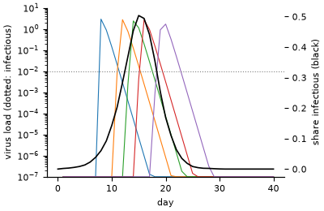

Within-host and between-host epidemic#
Field: epidemiology · Zoo name: within_host · Module: modelly.zoo.within_host.model

Every host carries its own infection as three ODEs, the target-cell-limited model of influenza
(Baccam et al., 2006): target cells T, infected cells I and virus V, with
T' = -beta T V, I' = beta T V - delta I and V' = p I - c V. The infection rate beta is
drawn per host from a lognormal law; delta, p and c are shared. A host is infectious
while its virus load is above threshold. Between hosts, a daily phase exposes each
susceptible with probability 1 - exp(-contacts * transmissibility * share infectious) and
seeds its virus at exposure_dose. The two scales meet in both directions: the outbreak sets
who is exposed when, and each host’s viral course sets when it is infectious.
How it is written#
The state of the infections lives in the hosts’ columns, and one
AgentODE integrates all of them each day: every host takes the adaptive
steps its own solve_ivp call would take, while the right-hand side runs once per stage for
the whole population. The moments a host’s virus rises through the threshold and falls back
are events, located on the solver’s interpolant, so each host’s
onset and clearance are known to the instant (Host.onset, Host.cleared) instead of being
rounded to the day.
from modelly.zoo.within_host.model import Host, WithinHost, WithinHostScenario
model = WithinHost(WithinHostScenario(rng=1, hosts=100_000))
model.run() # 60 days
model.attack_rate()
model.columns[Host].onset # when each host became infectious, to the instant
model.datacollector.get_model_vars_dataframe() # exposed, infectious, mean virus per day
Parameter |
Default |
Meaning |
|---|---|---|
|
|
number of hosts |
|
|
hosts infected at the start, with |
|
|
contacts per host per day |
|
|
chance that a contact with an infectious host exposes |
|
|
lognormal law of the infection rate (median, sigma) |
|
|
|
|
|
|
|
|
|
|
|
virus load above which a host is infectious |
|
|
virus load given at exposure and to index cases |
|
|
integration tolerances |
|
|
run length of |
The viral parameters are of the order Baccam et al. fitted for influenza A, in relative units; the contact parameters are illustrative.
Performance#
A hundred thousand hosts run the sixty days in about 14 seconds on a laptop core. On the
twentieth day, with half the hosts exposed, one day of the batch takes 0.62 s where one
solve_ivp call per exposed host takes 21.2 s, 34 times longer, and the two agree to
4e-9 of the tolerance (benchmarks/ode/within_host.py, results in within_host.json).
The ODE guide compares the batch with the loop and with one
stacked solve_ivp call at every population size.
Validation#
tests/zoo/test_within_host.py checks the integration against scipy.integrate.solve_ivp
and against a closed form:
one day of the whole population equals one
solve_ivpcall per exposed host, same method and tolerances, to round-off, and each onset located during the day equals the crossingsolve_ivp’s own event finds;a host with no target cells clears its virus exponentially,
V(t) = V0 exp(-c t), so it falls through the threshold atlog(V0 / threshold) / c; the clearance times of fifty hosts with loads from 0.02 to 5 match it to a relative 1e-6;target and infected cells stay in
[0, 1]and their sum never grows;an outbreak needs contacts: with them most hosts are exposed, without them only the index cases;
the same seed gives the same outbreak, straight or resumed from a checkpoint, bit for bit.
Model card: Within-host and between-host epidemic#
Hosts infect each other while each infection runs as a target-cell-limited viral ODE inside its host, all hosts integrated as one batch with each host’s own solve_ivp steps.
Model: modelly.zoo.within_host.model:WithinHost · Validated: 2026-11-03 with Modelly 1.4.3, on source 64f831f6ef17
Intended use#
Teaching how within-host dynamics (viral growth, a threshold for infectiousness) shape an epidemic between hosts.
A starting point for nested models: per-host treatment, immunity or dose effects on top of a validated viral core.
Showing per-agent ODEs with events at scale: onsets and clearances located to the instant for a hundred thousand hosts.
Out-of-scope use#
Forecasting an influenza season or any real outbreak: contacts and transmissibility are illustrative and nothing is calibrated to case data.
Clinical questions about individual patients: the viral parameters are of the order fitted for influenza A, in relative units, not a patient’s.
Infections with a latent reservoir, an immune response or reinfection, which the three-equation model does not have.
Data#
None by default: the viral rates are of the order Baccam et al. (2006) fitted for influenza A, in relative units, and the contact parameters in
WithinHostScenarioare illustrative.The infection rate of each host is drawn from a lognormal law with the scenario’s median and spread, from the model’s seed.
Validation#
Check |
Test |
|---|---|
one day of the whole population equals one solve_ivp call per exposed host, final states and onset times, to round-off |
|
with no target cells the virus clears at log(V0 / threshold) / c, to a relative 1e-6, for fifty initial loads |
|
cells stay in [0, 1]; an outbreak needs contacts; same seed same outbreak, straight or resumed from a checkpoint |
|
Known limits#
Homogeneous mixing between hosts: the chance of exposure depends only on the share infectious, with no households, places or networks.
Infectiousness is all or nothing at a virus threshold; transmission does not grow with the load.
No immune response: a host’s infection ends only when its target cells are used up, and an exposed host is never exposed again.
Exposure happens once a day in the transmission phase; only the course of each infection is continuous in time.
Ethical considerations#
Results about who becomes infectious when could be read as advice on isolation periods; they rest on illustrative parameters and must not be presented as such.
Host-to-host variation comes from a drawn infection rate, not from data on people; say so when the spread of outcomes between hosts is shown.
References#
Baccam, P., Beauchemin, C., Macken, C. A., Hayden, F. G. and Perelson, A. S. (2006). Kinetics of influenza A virus infection in humans. Journal of Virology, 80(15), 7590-7599.
Hairer, E., Norsett, S. P. and Wanner, G. (1993). Solving Ordinary Differential Equations I: Nonstiff Problems, 2nd ed. Springer.
Mideo, N., Alizon, S. and Day, T. (2008). Linking within- and between-host dynamics in the evolutionary epidemiology of infectious diseases. Trends in Ecology and Evolution, 23(9), 511-517.
Start a project from it with modelly zoo copy within_host my_outbreak.